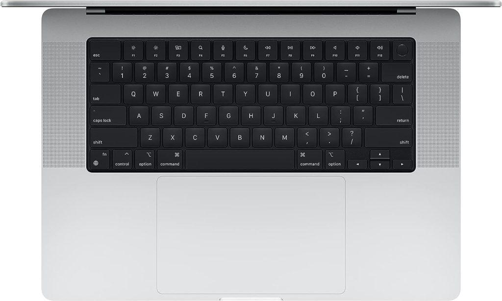

MacBook Air M2 Laptop Review 2023
The MacBook Air M2 has long been a beloved choice for those seeking a sleek and powerful laptop. With the release of the brand new MacBook Air M2 laptop, Apple has once again raised the bar for performance and design. In this comprehensive review, we will delve into the key features and improvements of the MacBook, comparing it to its predecessor, the MacBook Air M1. From the upgraded processor to the enhanced display and battery life, we will explore all the reasons why the M2 is a top contender in the laptop market.
MacBook Air M2 With New Chipset
One of the most significant upgrades in the MacBook Air M2 is the inclusion of the Apple M2 chipset. This new processor promises improved performance and efficiency compared to the previous M1 chip. According to Apple, the M2 CPU is 18 percent faster than the M1, but what does that mean in real-world usage?
To put the claims to the test, we conducted a series of blind tests, comparing the performance of the new Air M2 to the previous Air M1. From web browsing to video calls and video editing, we sought to determine if the average user would notice a substantial difference in everyday tasks.
Impressive Performance in Everyday Tasks
In our web browsing test, where we opened multiple tabs and played 4K YouTube videos simultaneously, both the MacBook Air M2 and M1 handled the load equally well. Switching between tabs was smooth, and the videos played without any noticeable lag. It is worth noting that users who tend to keep numerous tabs open might experience some performance limitations, so it is advisable to opt for a higher RAM configuration.
Next, we tested video calls using resource-intensive apps like Snap Camera, which applies filters to your face in real-time. Surprisingly, both laptops performed admirably, maintaining smooth video playback even with the filters applied. It became clear that for most users engaged in typical web browsing and video conferencing activities, the difference between the M2 and M1 might not be readily apparent.

Design and Display
In terms of design, both the MacBook Air M2 and M1 share a similar aesthetic. The sleek and lightweight aluminum chassis remains unchanged, offering the portability and elegance that MacBook Air users have come to expect. However, the MacBook Air M2 introduces a larger display, setting it apart from its predecessor. The new MacBook Air M2 boasts a 13.6-inch Liquid Retina display, the largest ever seen in an ultra-portable MacBook. This increase in screen real estate allows users to fit more content on the display simultaneously. While it may not match the advanced screens found in the MacBook Pro lineup, the M2 display offers a slightly brighter viewing experience compared to the previous model.
Final Thought
The MacBook Air M2 offers substantial improvements over its predecessor, the M1 model. Its faster processor, larger display, improved webcam, and extended battery life make it an attractive option for both casual users and professionals alike. The M2 is enhanced performance in resource-intensive tasks, such as video editing, sets it apart from the M1 MacBook Air. However, for users primarily engaged in web browsing, document editing, and media consumption, the M1 MacBook Air remains a reliable and cost-effective choice. Ultimately, the decision to upgrade to the MacBook Air M2 depends on individual needs and preferences, as well as the desire for the latest technology and improved performance